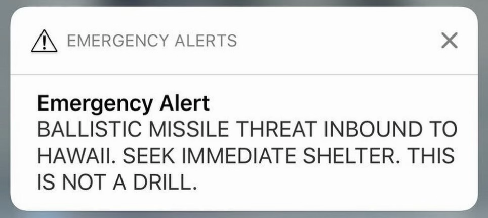
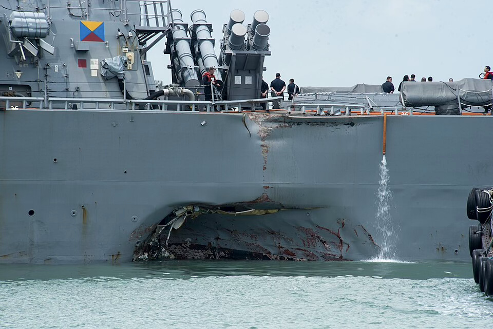
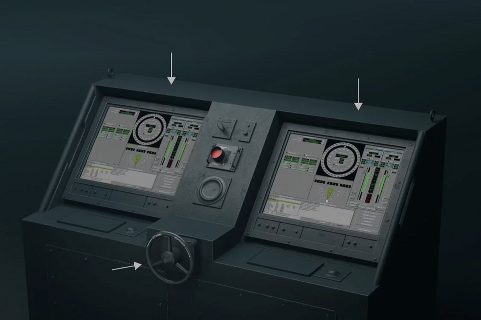

High-stress operational environments require controls that offer immediate, unambiguous feedback, high tactile contrast, and error-tolerant menu structures. When emergency alert software or military bridge navigation systems rely on cluttered visual menus, ambiguous labels, or non-tactile touchscreens, critical decisions fail during time-sensitive operations.
Case Study 1: The 2018 Hawaii False Missile Alert
On the morning of January 13, 2018, the Hawaii Emergency Management Agency (HI-EMA) inadvertently issued a ballistic missile alert to the entire population of Hawaii. For 38 terror-filled minutes, residents and visitors received emergency mobile broadcasts stating: "BALLISTIC MISSILE THREAT INBOUND TO HAWAII. SEEK IMMEDIATE SHELTER. THIS IS NOT A DRILL."[1]
HI-EMA Emergency Alert System (EAS) Menu
Illustrative reconstruction of the statewide alert menu.
- DRILL – AMBER Alert
- DRILL – High Surf Advisory
- DRILL – State Only
- MISSILE ALERT (LIVE)
- Tsunami Warning
Spatial Proximity and Plain Text Menu Design
The root cause of the false alarm was an interface design that violated basic error-prevention principles:
- Adjacent Menus without Visual Hierarchy: The software interface used to trigger real statewide emergency alerts was a plain, unstyled HTML drop-down/list menu. The option for an internal test (`DRILL - State Only`) was placed in direct spatial proximity to the live broadcast option (`MISSILE ALERT (LIVE)`). Both option titles shared nearly identical typography, font size, and color.
- Lack of Distinctive Signifiers: There were no color-coded visual warnings (such as red banners for live alerts vs. green banners for internal drills), no graphical icons, and no physical separation between routine testing tools and high-consequence public broadcast controls.
- Meaningless Confirmation Prompts: When the operator mistakenly selected `MISSILE ALERT (LIVE)`, the system presented a generic secondary confirmation popup asking: "Are you sure you want to process this request?" Because the prompt failed to state *which* alert was about to be processed (e.g., *"You are about to broadcast a LIVE BALLISTIC MISSILE ALERT to the entire state. Proceed?"*), the operator clicked "OK", believing they were confirming the routine drill.

Case Study 2: The USS John S. McCain Collision (2017)
On August 21, 2017, the U.S. Navy guided-missile destroyer USS John S. McCain collided with the Liberian-flagged chemical tanker Alnic MC in the heavily congested Singapore Strait. The collision tore a 28-foot hole in the destroyer’s hull, flooding crew quarters[4] and resulting in the deaths of ten sailors [3] [5].
| Control or display | Helm Station | Lee Helm Station |
|---|---|---|
| Physical steering wheel | Present | None |
| Steering (touchscreen) | HELM [ON] | LEE HELM |
| Port shaft (touchscreen) | 87 RPM | 44 RPM |
| Starboard shaft (touchscreen) | 87 RPM | 87 RPM |

Complex Touchscreen Interfaces and Unintended Control Transfers
Investigative reports by the National Transportation Safety Board (NTSB) and the U.S. Navy revealed that complex touchscreen interface software directly caused the bridge team to lose control of the vessel:
- The Integrated Bridge and Navigation System (IBNS): The Navy had replaced traditional mechanical throttles and helm controls with flat-panel LCD touchscreens running a graphical user interface (GUI).
- Unilateral Control Shift: During transit through dense traffic, the Commanding Officer ordered steering and thrust control to be split between the Helm Station (steering) and Lee Helm Station (throttles). However, because the system was operating in "backup manual mode," control could be transferred unilaterally from one touchscreen terminal to another without requiring confirmation from the station losing control.
- Perceived Loss of Steering: During the transfer of thrust control, a watchstander accidentally transferred steering control to the Lee Helm station. The physical steering wheel at the Helm Station immediately lost control of the rudders. The helmsman panicked, announcing a total loss of steering. In reality, the steering system was functioning perfectly, but control had silently moved to the adjacent screen [3].
- Unganged Throttles and Accelerated Turn: To slow the vessel, the Lee Helmsman lowered the port propeller speed on his touchscreen. However, transferring control had automatically "unganged" (disconnected) the port and starboard throttle controls. The Lee Helmsman did not notice that only the port shaft slowed to 44 RPM while the starboard shaft remained at 87 RPM. The resulting asymmetric thrust accelerated the destroyer’s sharp left turn directly across the bow of the oncoming tanker.
- Return to Physical Controls: Following the accident investigation, the U.S. Navy announced in 2019 that it would strip touchscreen helm controls from all Arleigh Burke-class destroyers, replacing them entirely with physical steering wheels and mechanical throttles to restore immediate tactile feedback and physical affordances.
